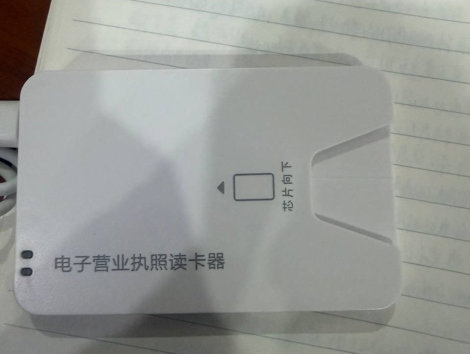

兼容性最好的eSIM实体卡eSTKme新年促销，加10港元就送读卡器。
比起自己用的pc/sc电子营业执照读卡器，折扣力度还不错！还能继续用 9 折优惠码「naixi」。
直接在iPhone上写卡也很方便，也不用担心跑路风险，好多年的老牌商家！


比起自己用的pc/sc电子营业执照读卡器，折扣力度还不错！还能继续用 9 折优惠码「naixi」。
直接在iPhone上写卡也很方便，也不用担心跑路风险，好多年的老牌商家！

就像给电脑插随身WiFi，要在不支持的设备（如国行手机）上使用eSIM，就必须借助这类eUICC芯片～🤗
我在用的有eSTKme、9eSIM，这两家都可以用优惠码naixi打折。
在iOS体验最佳的是eSTK，用的是iPhone拆机eUICC；9eSIM经常有9块9的v0主打性价比，v3量大管饱，程序开源，市面上一堆盗版小白卡得益于此。 https://t.co/pjPmOYMHh5 https://t.co/tROudUaqWj
我在用的有eSTKme、9eSIM，这两家都可以用优惠码naixi打折。
在iOS体验最佳的是eSTK，用的是iPhone拆机eUICC；9eSIM经常有9块9的v0主打性价比，v3量大管饱，程序开源，市面上一堆盗版小白卡得益于此。 https://t.co/pjPmOYMHh5 https://t.co/tROudUaqWj